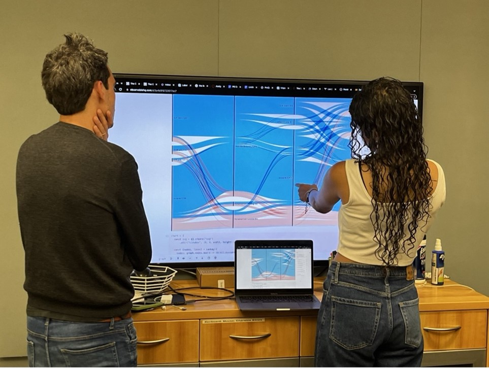

Grand Tour Project
Project Lead
Giovanna Ceserani
Faculty Director of CESTA and Associate Professor of Classics
Project Intern
Raagavi Ragothaman
Summer, 2023
Project Description
In the 18th century, thousands of Northern Europeans traveled to Italy for a journey of cultural and symbolic capital that they called the Grand Tour. These travels were a formative institution of modernity and contributed to a massive reimagining of politics and the arts, ideas about leisure, the market for culture, and the practices of professionalism. Since 2008, the Grand Tour Project (grandtour.stanford.edu) has generated digital tools, analyses, and visualizations to bring us closer to the diverse travelers who collectively represent 18th-century travel to Italy. We have been digitizing and enhancing John Ingamells’ Dictionary of British and Irish Travelers to Italy 1701-1800 to create a searchable database of more than six thousand entries. This past year the project’s focus has been on preparing this interactive database and an accompanying digital volume for publication with the title A World Made by Travel: The Digital Grand Tour for the Stanford University Press Digital Series. CESTA intern alumni Ashwin Ramaswami and Ryan Tan returned to the project to work on this exciting phase as we refined both development and design to satisfy the press’s guidelines, anonymous reviewers’ comments, digital accessibility, and best practices for digital sustainability and preservation. Raagavi Ragothaman, a CS coterm master’s student, also contributed in crucial ways, focusing on interactivity features and data visualizations.
For the project’s publication, we wanted to communicate immediately and clearly how the data for the more than six thousand travelers in the database is not only incomplete but also that this incompleteness is unevenly distributed. For any one traveler, we might have a lot of data about their journey but very little about their life—maybe not even their date of birth. We used the parallel sets visualization (originally created using Titanic passengers’ data) to convey this information showing at once the correlations among five dimensions across the entire database: 1) whether we had data about travelers’ dates of birth and death, 2) about their occupation and education, 3) the gender of the travelers, 4) how many data points (visits) we had for their journeys, and, finally, 5) whether the travelers’ entries were found in the original Dictionary, or if we newly created their entries in the course of the project as we recovered forgotten travelers.
Code
Code
Code
Code
Code
Code
Code
Code
The parallel sets offer an interactive visualization: by hovering over the various curved sections, the reader can appreciate how specific dimensions correlate in the database. This screenshot shows that by hovering on the yellow fine curved line in the last panel, you see that there are twelve women in the database for whom we have both birth and death dates, who had entries in the original Dictionary, and who are among the 2% of travelers for whom we have data for between 26 and 74 visits during their journeys.
 Raagavi in a data analysis and visualization session discussing an early version of the parallel sets visualization with digital design professor Michele Graffieti, who visited CESTA last spring from DensityDesign Lab at the Italian Politecnico University of Milan—the best work happens collaboratively!